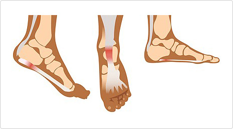

The plantar fascia is a thick fibrous band of connective tissue originating on the bottom surface of the heel bone. It is commonly associated with a long period of weight bearing down on the heel. Thesymptoms commonly recognized among those sufferingfrom plantar fasciitis is inflammation of the area and swollen soles and severe pain.
